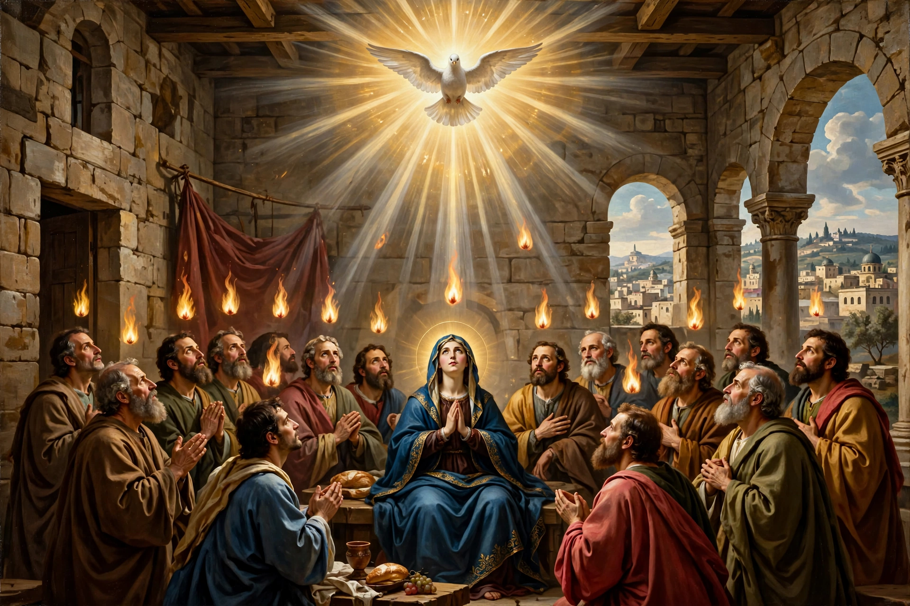

Pentecost is a Christian feast commemorating the descent of the Holy Spirit upon the Apostles and other followers of Jesus, as described in Acts 2. It is celebrated on the seventh Sunday (the fiftieth day) after Easter.

Acts 2 describes the disciples gathered in Jerusalem for the Jewish feast of Shavuot when a sound like rushing wind filled the house, tongues of fire rested on each, and they spoke in other languages, enabling Peter's sermon and the baptism of about three thousand people.
Pentecost (Whitsunday in Britain) closes the Easter season. Red vestments symbolize the Spirit's fire. Traditions include vigils, baptisms, confirmations, and in some countries a Whit Monday holiday. Pentecostalism takes its name from the event, emphasizing direct experience of the Holy Spirit.